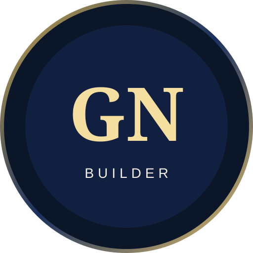

I make things at the intersection of real-world problems, technology, AI, and creative experimentation. I'm a licensed pharmacist from Nigeria who turns observations into products, tools, stories, and experiments.

I'm a licensed pharmacist who became a builder because I kept noticing problems I wanted to make tangible solutions for.
My work moves between healthcare, AI, creative technology, blockchain, data, and automation. I don't treat one technology as my medium; I choose the medium that fits the idea.
Some projects solve practical problems. Others are experiments in storytelling, interfaces, security, or what software can become. The common thread is simple: I make things.
52 weeks. 52 experiments. One year of making.
I want to turn one observation, problem, question, or strange idea each week into something tangible — software, an AI experiment, a visual story, an interactive experience, a tool, or whatever medium the idea requires.
The goal isn't to build a startup every week. It's to preserve the act of making: notice something, make a version of it, learn from the result, and share the process.
I'm open to creative collaborations, product experiments, healthcare technology, AI, Web3, and unusual ideas worth making real.